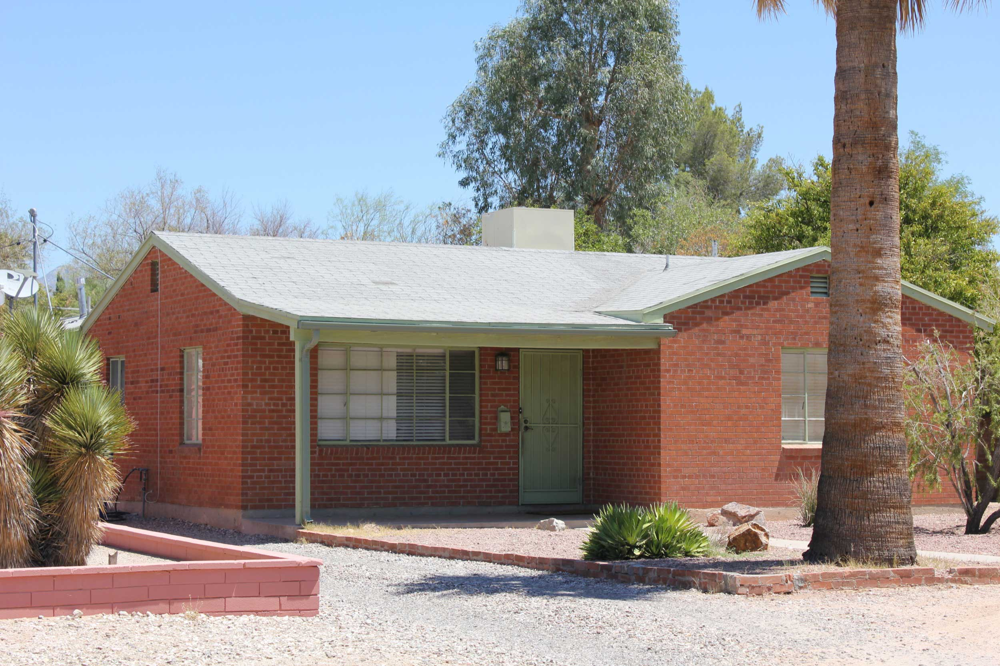
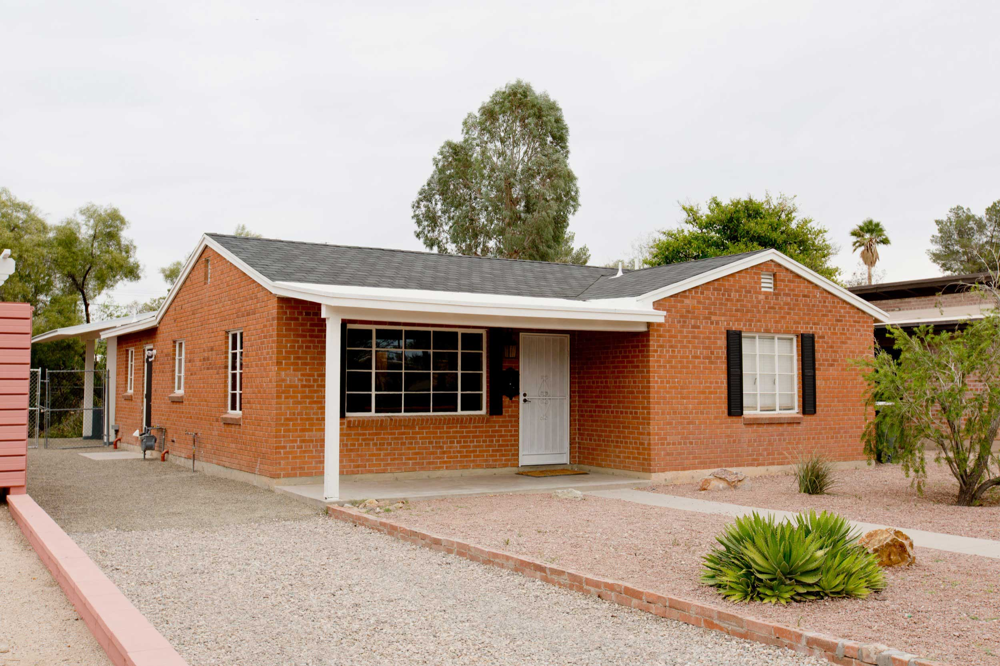
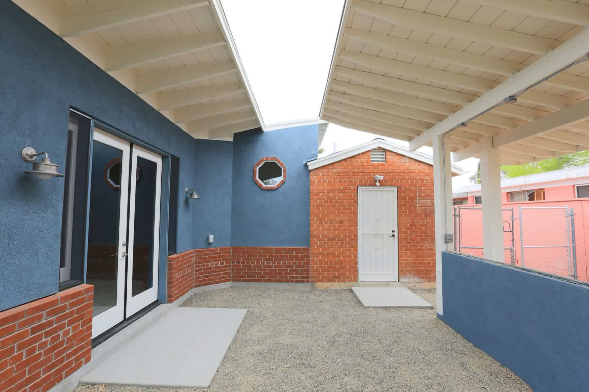
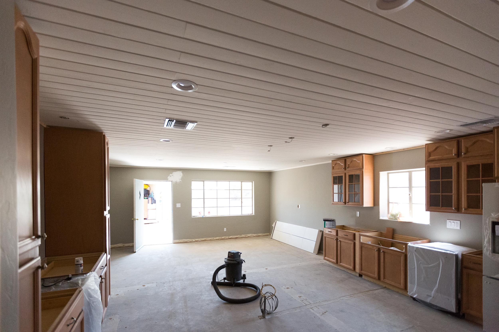

Residential / Historic remodel
Sam Hughes Historic Addition
A contemporary addition that changes how a historic home lives without changing how it belongs to its street.

- Location
- Tucson, Arizona
- Type
- Remodel + primary suite addition
- Context
- Historic Sam Hughes neighborhood
- Focus
- Continuity, shade + expanded living
The project
The designated historic home was extensively remodeled and expanded while its original public presence was carefully retained.
Small interior rooms needed to become a generous shared living space, while a new primary suite, walk-in closet, and office had to fit behind the original house and respect its historic character.
The original bedrooms and bath remained in place. New work was concentrated at the rear under a broad shed roof, paired with a cantilevered barbecue canopy to form a shaded slot courtyard against the western exposure.
Brick at the base ties the addition to the home’s double-wythe masonry, while the roof geometry makes the new work legible, shaded, and distinctly of its time.




